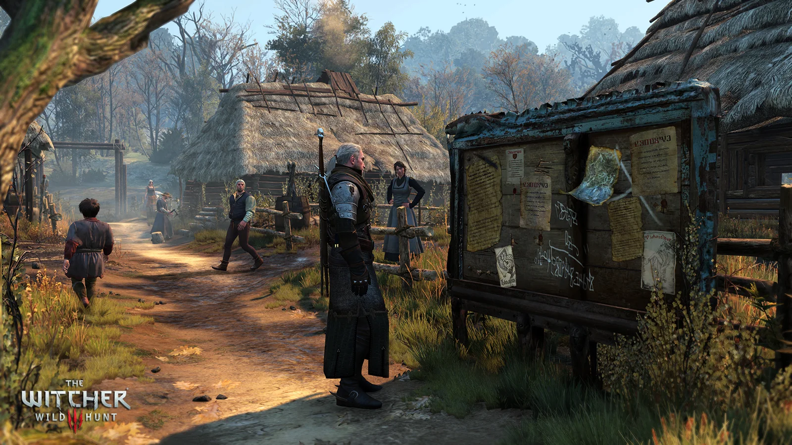

TEMERIA · WHITE ORCHARDAN UNOFFICIAL FIELD JOURNAL
WHITE ORCHARD / THE BEGINNING OF THE PATH
The Path
through White Orchard.
A witcher’s work begins with a lead. Follow it. Find what is worth doing along the way.
YOUR JOURNALArrival in White OrchardTHE KEEP · XBOX SERIES X|S · YOUR PROGRESS, YOUR PATH